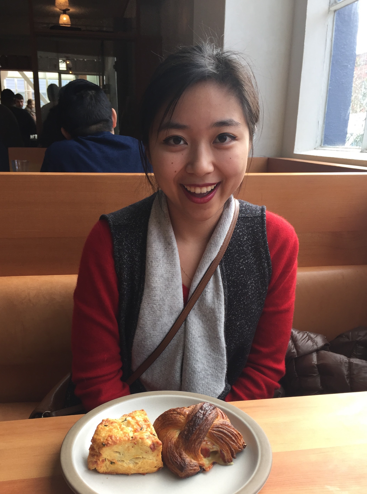

(she/her)

Hello!
I’m currently a Research Engineer at Google Brain Research in San Francisco, CA.
People are so cool! People interacting are even cooler! I’m excited to learn more about us and how algorithms shape our lives. What affects the decisions we make? What motivates someone to speak up? What would change someone’s mind? What kinds of decisions can algorithms help with, and which should we leave algorithms out of? What kinds of objectives, political or social, can we, or can we not write down?
At Brain, I’ve spent some time figuring out how trustworthy our machine learning systems are and how much variance there is in different training procedures.
Before that, I had great fun learning about how real neural networks (brains!) take in the world with Jonathan Pillow and Uri Hasson during my undergrad in Operations Research at Princeton.
You can find me on the internet: Twitter, Google Scholar, Goodreads
Writing a Google AI Residency Cover letter with Ben Eysenbach (2019)
Submit to Journals [pdf] (2018)
Sourdough Literature Review (2020)
In my free time, I enjoy making stuff. Sometimes this is pottery, sourdough, or knitting/crocheting. I also enjoy being outdoors, listening to jazz, and dancing. Sometimes all at the same time!
In the more distant past, I’ve also solved for optimal seating arrangements at Google, and I spotted ships at bay with hyperspectral sensors at the Naval Research Lab in DC.